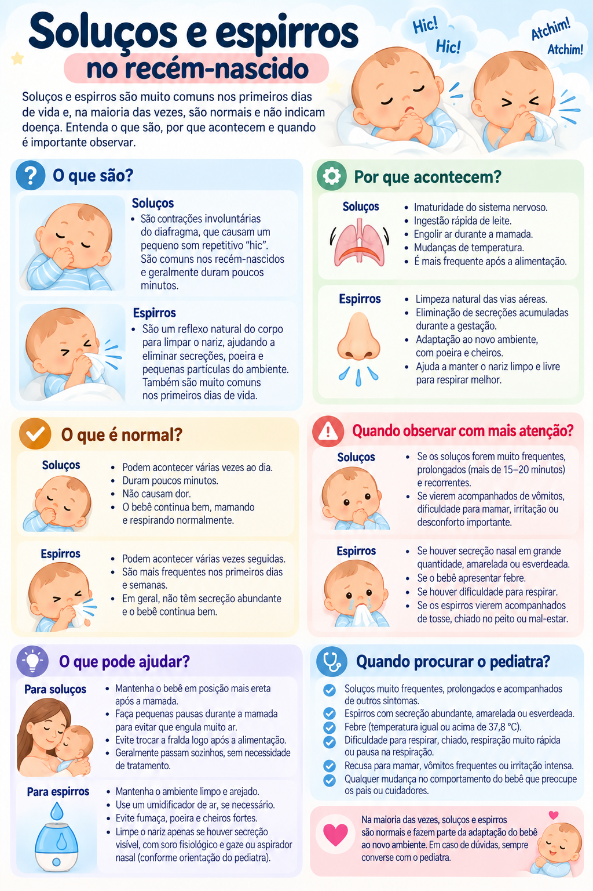

Soluços e espirros no recém-nascido
Comportamentos frequentes nos primeiros dias de vida e como diferenciá-los de sinais que merecem avaliação.
Por que o bebê espirra?
O nariz do recém-nascido é pequeno e sensível. Espirrar pode funcionar como um reflexo para limpar as vias nasais. Espirros isolados, sem febre, dificuldade respiratória ou alteração do estado geral, não significam necessariamente resfriado.
E os soluços?
Soluços também são comuns em bebês e geralmente desaparecem sozinhos. Se o bebê está confortável, mamando e respirando normalmente, em geral não é necessário tentar interrompê-los com manobras caseiras.
Observe o bebê, não apenas o espirro ou o soluço
Em um recém-nascido, mudanças na alimentação, atividade, respiração e temperatura são mais importantes do que a presença isolada desses reflexos.
Procure avaliação rapidamente se houver
- dificuldade para respirar, respiração muito rápida, gemência ou retrações no tórax;
- coloração azulada ou palidez importante;
- febre ou temperatura anormal em um recém-nascido;
- dificuldade importante para mamar ou recusa alimentar;
- bebê muito sonolento, pouco responsivo ou com atividade claramente reduzida.
Infográfico

Fontes e revisão
OMS — Essential newborn care
OMS — Newborn health: sinais de perigo e cuidados essenciais
Nota editorial: as fontes acima sustentam a observação do estado geral e dos sinais de perigo no recém-nascido; a interpretação de espirros e soluços isolados deve sempre considerar o contexto clínico.
Última revisão: setembro de 2026.